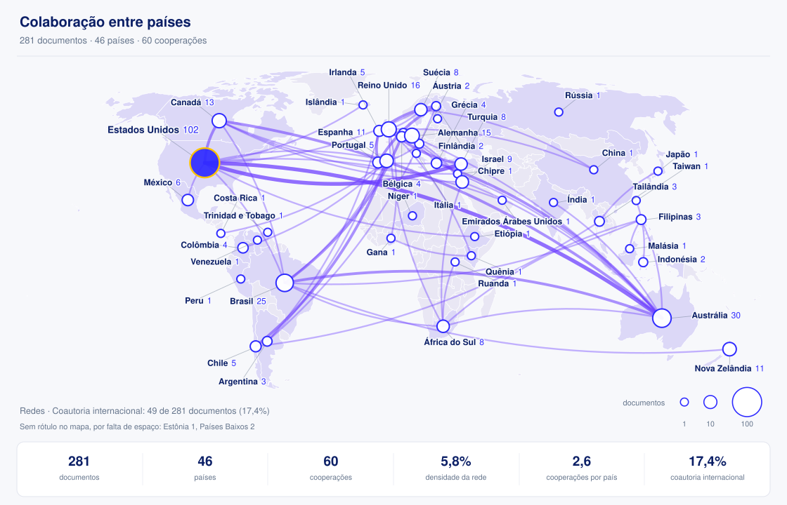
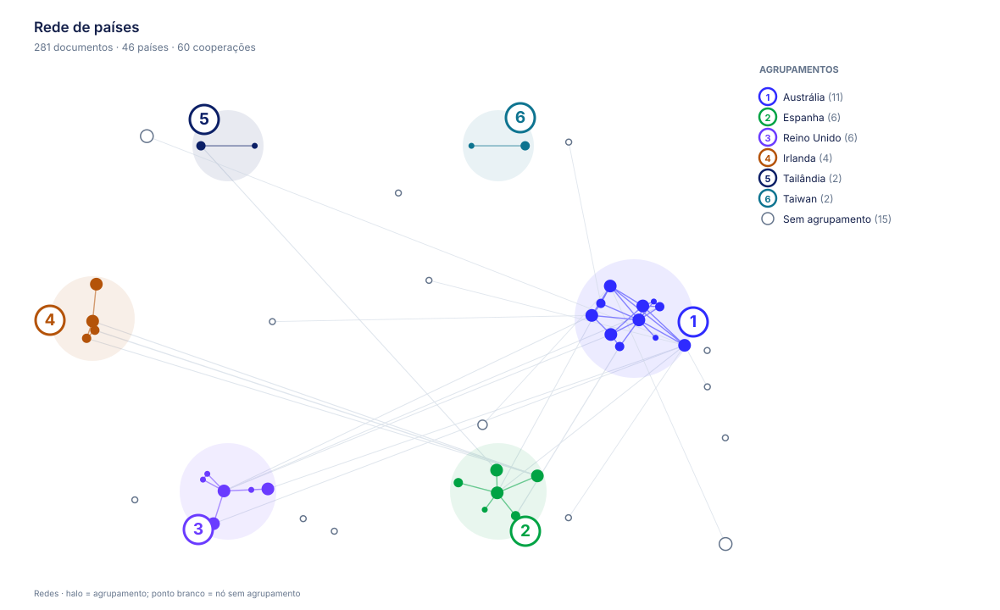

Redes — países do SERJ
Países — SERJ
281 documentos, 46 países, 60 cooperações, 17,4% de coautoria internacional.

Mapa: posição geográfica; área da esfera pelo número de documentos. Na ferramenta, o mapa é interativo: passar o mouse mostra documentos e parceiros, clicar destaca o país e suas cooperações.

Rede no padrão das demais: halo por agrupamento, selo numerado na borda e legenda à direita.